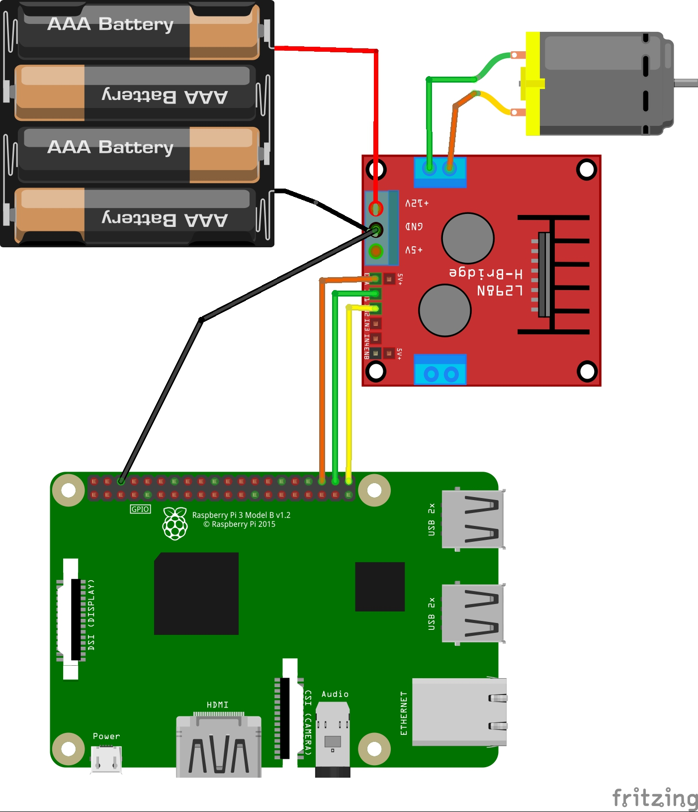

进阶篇
PWM介绍
脉冲宽度调制是一种对模拟信号电平进行数字编码的方法。通过高分辨率计数器的使用，方波的占空比被调制用来对一个具体模拟信号的电平进行编码。PWM信号仍然是数字的，因为在给定的任何时刻，满幅值的直流供电要么完全有（ON），要么完全无（OFF）。电压或电流源是以一种通（ON）或断（OFF）的重复脉冲序列被加到模拟负载上去的。通的时候即是直流供电被加到负载上的时候，断的时候即是供电被断开的时候。只要带宽足够，任何模拟值都可以使用PWM进行编码。
呼吸灯案例
示例代码
1
2
3
4
5
6
7
8
9
10
11
12
13
14
15
16
17
18
19
20
21
22
23
24
25
26
27
28
29
30
31
32
33
34
35
36
37
38
39
40
41
42 | # -*- coding:utf-8 -*-
"""
呼吸灯案例
"""
import RPi.GPIO as GPIO
import time
# 定义控制引脚
bcm21_led = 21;
GPIO.setmode(GPIO.BCM)
GPIO.setwarnings(False)
pwm_led=None
def init():
global pwm_led
GPIO.cleanup()
GPIO.setup(bcm21_led,GPIO.OUT,initial=GPIO.LOW)
pwm_led = GPIO.PWM(bcm21_led, 50);
def run():
init()
# 设置初始占空比
count=1;
# 设置每次变化的步长
step=2;
while True:
count += step
# 修改占空比
pwm_led.start(count)
# 到达边界之后，数值改变方向要取反
if count >= 99 or count <=1:
step = -1*step
# 让程序运行稍微慢一点
time.sleep(0.03)
# 将程序跑起来
try:
run()
finally:
GPIO.cleanup()
|
电机驱动

示例代码
1
2
3
4
5
6
7
8
9
10
11
12
13
14
15
16
17
18
19
20
21
22
23
24
25
26
27
28
29
30
31
32
33
34
35
36
37
38
39
40
41
42
43
44
45
46
47
48 | # -*- coding:utf-8 -*-
"""
电机驱动的案例
注意：开发板需要与驱动板共地，否则会有问题
"""
import RPi.GPIO as GPIO
import time
# 定义引脚
bcm20_motor = 20
bcm21_motor = 21
bcm16_ena = 16
GPIO.setmode(GPIO.BCM)
GPIO.setwarnings(False)
# pwm
pwm_motor = None
def init():
GPIO.cleanup()
GPIO.setup(bcm20_motor,GPIO.OUT,initial=GPIO.HIGH);
GPIO.setup(bcm21_motor,GPIO.OUT,initial=GPIO.LOW);
GPIO.setup(bcm16_ena,GPIO.OUT,initial=GPIO.HIGH);
global pwm_motor
pwm_motor = GPIO.PWM(bcm16_ena,1000)
def run():
# 设置电机转动占空比
pwm_motor.start(5)
GPIO.output(bcm20_motor,GPIO.HIGH)
GPIO.output(bcm21_motor,GPIO.LOW)
while True:
pass
# 将程序跑起来
try:
init()
run()
finally:
GPIO.cleanup()
|